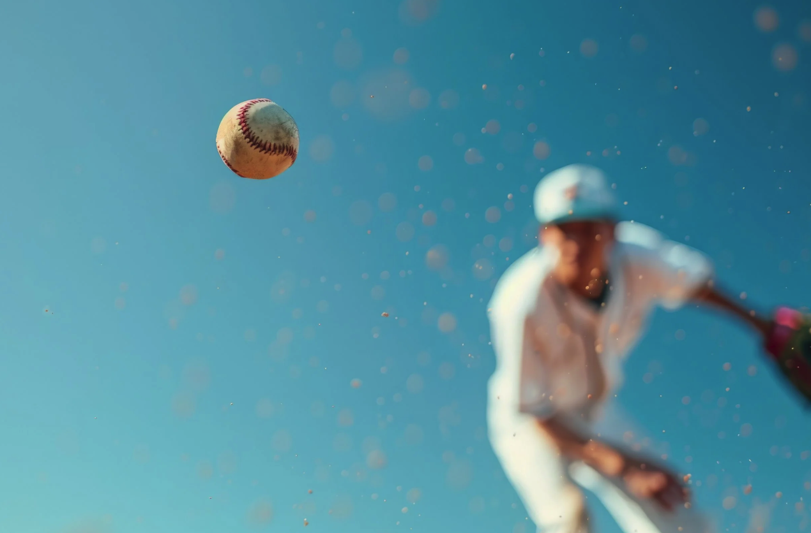

As RTDs reshape the spirits landscape, the parallel to craft beers’ rattling of Big Beer is undeniably eerie. What Big Beer didn’t understand then was that the market share they lost were audiences searching for something uniquely different.
More →